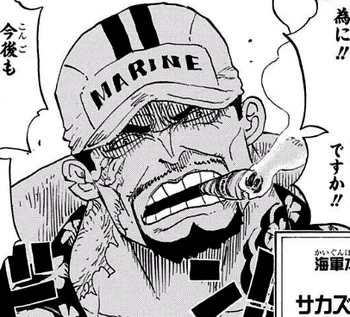

FarinaEma
Autore: Emanuele Farina
Bio: Aspirante Ingegnere Nucleare, interessato a tutto a tech, storia ed The Elder Scrolls✨
Contact: emanuelefarina26@gmail.com
GitHub: http://github.com/Flourboii
Avatar: assets/350-3539598986.webp
About Me
Sito creato allo scopo di tornare di tornare a programmare, un pò per esercizio personale, un po per svago.
. Caricherò boh quello che mi capita appunti, cazzate, mod di morrowind e altre cazzate. Bella
History
2026 - Presente: Progetti Indipendenti & Open Source
Sviluppo di applicazioni web moderne e minimaliste, esplorando l'integrazione di AI e nuove tecnologie frontend.
2024 - 2025: Software Developer
Collaborazione in team agili per lo sviluppo di soluzioni enterprise basate su cloud e microservizi.
2022 - 2024: Formazione & Primi Passi
Studi focalizzati sull'ingegneria del software, basi di dati e sviluppo web (Full-Stack).
Writing
© 2026 FarinaEma - Built with HTML & CSS. Under 10KB.